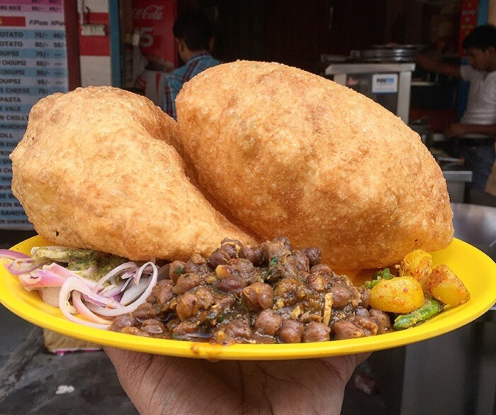
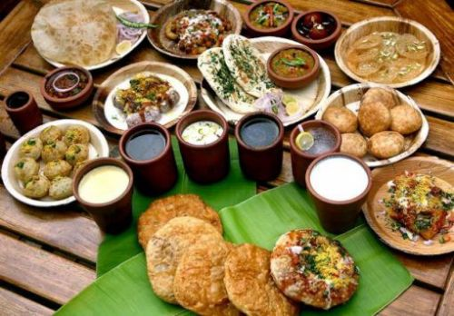
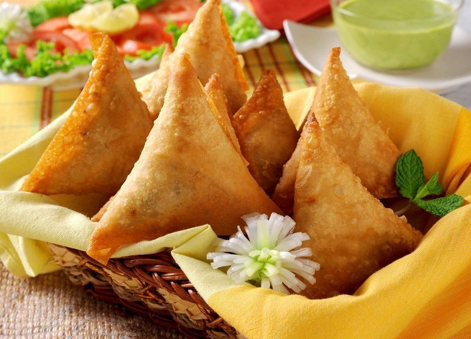

Food of NepalNepali/Nepalese cuisine comprises a variety of cuisines based upon ethnicity, soil and climate relating to Nepal's cultural diversity and geography. Dal-bhat-tarkari (Nepali: दाल भात तरकारी) is eaten throughout Nepal. Dal is a soup made of lentils and spices, served over boiled grain, bhat—usually rice but sometimes another grain - and a vegetable curry, tarkari. Condiments are usually small amounts of spicy pickle (achaar, अचार) which can be fresh or fermented, (mainly of dried mustard greens called as 'gundruk ko achar' and radish known as 'mula ko achar') and of which there are a considerable number of varieties.[1] Other accompaniments may be sliced lemon (nibuwa) or lime (kagati) with fresh green chilli (hariyo khursani) and a fried papad (thin, crisp disc-shaped food). Dhindo (ढिंडो) is a traditional food of Nepal. Much of the cuisine is variations on Asian themes. Momo is a Nepalese style dumpling filled with minced meat in a flour dough, given different shapes and then cooked by steaming. It is one of the most popular foods in Nepal and the regions of Sikkim, Darjeeling and Kalimpong in India where ethnic Nepalese have a presence. Momo were originally filled with buffalo meat but are now commonly filled with goat or chicken, as well as vegetarian preparations. Special foods such as sel roti, finni roti and patre are eaten during festivals such as Tihar. Sel roti is a traditional Nepali homemade ring-shaped rice bread which is sweet to taste. Other foods have hybrid Tibetan and Indian influence. Chow mein is a Nepali favorite in modern times based on Chinese-style stir fried noodles. It is one of the most beloved everyday staple lunches in Nepali/Nepalese households. | ||||||||
|  |  |  | ||||||